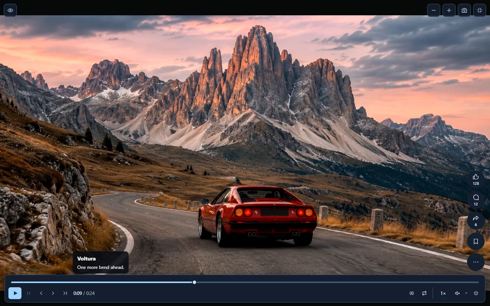
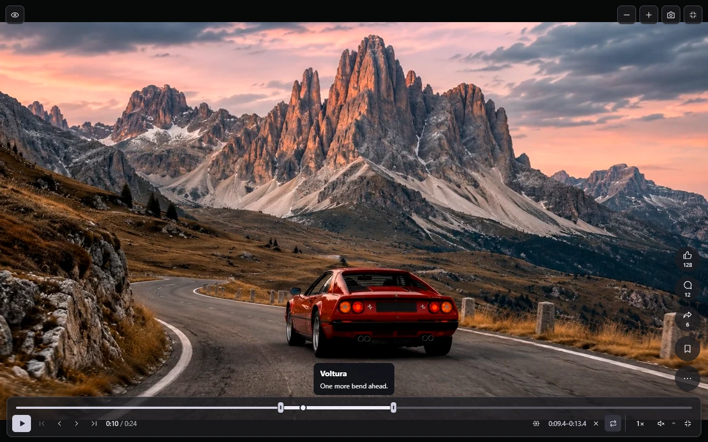
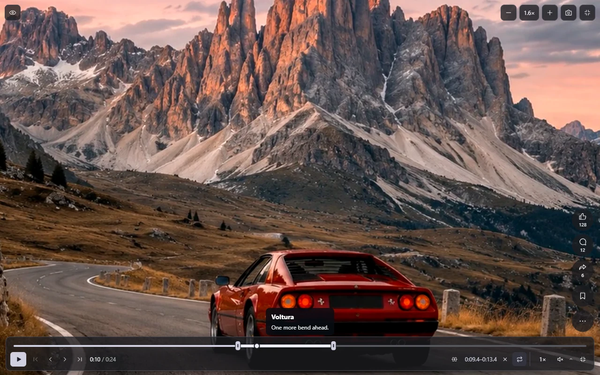
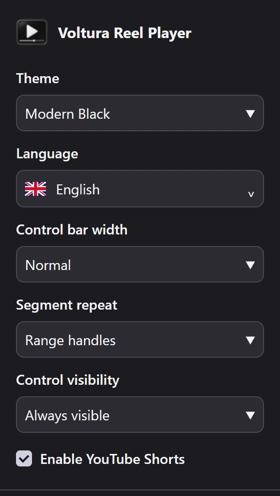

Seek and change speed
Scrub a wider timeline, step by 0.1 seconds, and adjust playback speed from 0.10× to 4×.
Voltura Reel Player is a free extension for desktop Chrome. Slow down a Reel, loop a section, or zoom in without leaving Facebook.

The extension adds a wider video timeline and keyboard shortcuts to Facebook. After installing it, open a Reel or a photo or video Story, then press F or select the fullscreen button. Press Esc to exit.
Scrub a wider timeline, step by 0.1 seconds, and adjust playback speed from 0.10× to 4×.
Drag the range handles or set A and B marks. Repeat the selection or the entire Reel.
Zoom up to 10×, pan across the video, and save an available paused frame as a full-resolution PNG.
Switch between Reels without leaving fullscreen. Navigation and seek buttons stay in place as the content changes.
See Facebook’s progress bars, move between cards, or jump to the first card of the next or previous Story. Pause auto-advance for a closer look.
Start a linked Reel right from the Story in fullscreen. It starts with the Story’s mute setting, and Back to Story returns you to the card.
Save a Story photo, a cropped Reel preview, or a paused video frame. The player tells you when the file is saved.
When available, Facebook’s seven reactions appear along the right edge. Share opens Facebook’s sharing panel.


Open Voltura Reel Player from the Chrome toolbar to change its look and controls. Set the control bar width, choose range handles or A/B marks for repeats, and decide whether controls fade when idle.
Use Chrome’s language automatically or pick Danish, Dutch, English, Finnish, French, German, Icelandic, Italian, Japanese, Norwegian Bokmål, Polish, Portuguese (Brazil), Portuguese (Portugal), Spanish, Swedish, or Traditional Chinese.
Midnight, Modern Black, Modern Metallic, Retro Wood, Forest, Matrix, Blood Red, Burnt Orange, Golden God, and Pink Panther.

Voltura Reel Player is made by Voltura AB, an independent software business in Stockholm, Sweden. Visit Voltura AB or view the source on GitHub.
The extension processes playback in Chrome. Voltura AB receives no Reel or Story content, browsing history, account information, or extension telemetry. Read the privacy policy.
If you’ve used Reel Player, leave an honest review on the Chrome Web Store. If you need help, report an issue on GitHub.